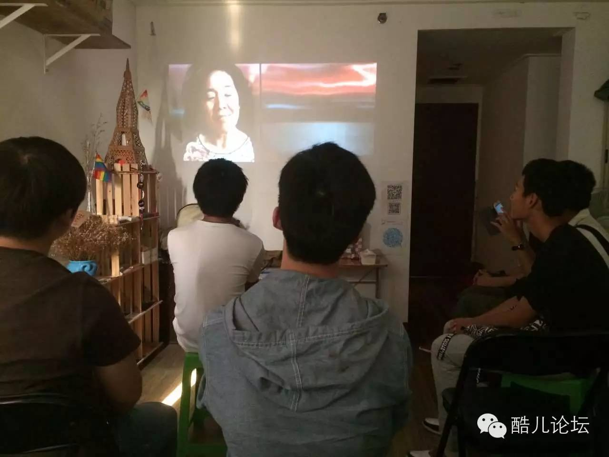
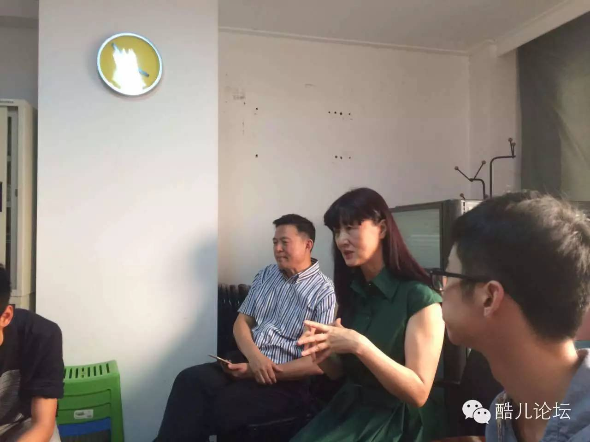
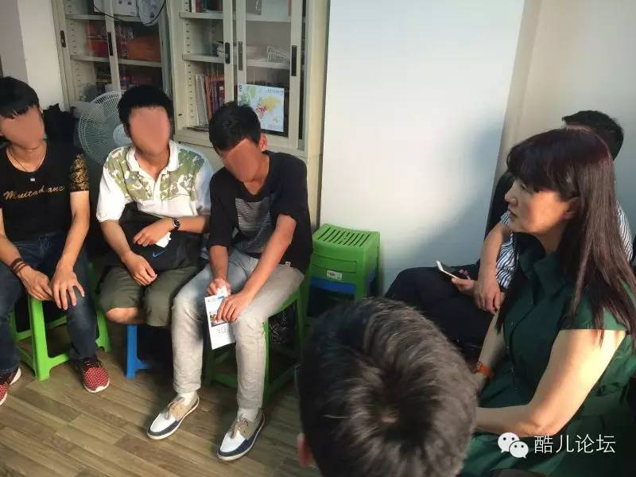
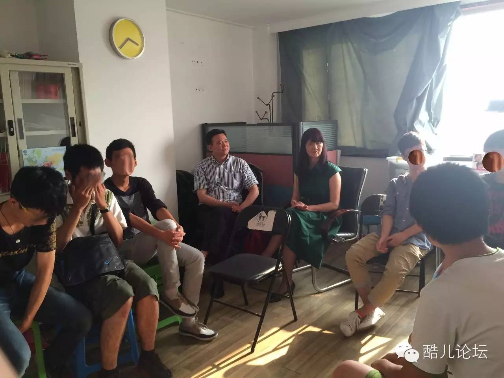

总结帖：中秋同食《亲子饭》
中秋同食《亲子饭》

Preface：同志中心与同志之家
今天看到有新的小伙伴把同志中心误叫成了同志之家。这个口误我是喜欢的。
当与向阳一起组建杭州同志中心，其中一个目的就是想给全杭州的高校同志一个真正可以安全放心地融入、释放与获得真挚情感的地方。我们通常也会把家定义为这样的地方。
于是在中秋前夜，有志愿者提出让中秋的活动更有一点家的氛围，我觉得是个很好的想法。
除了场地，家还需要亲人。我想到了小炜妈妈。
活动前一夜的临时计划，我还说很担心是否能成功，毕竟小炜妈妈平时也很忙，住得也离杭州市区较远。
但是小炜妈妈很快就答应了，我们约在第二天下午1点，小炜妈妈乘地铁过来。
接到小炜妈妈的时候我惊讶的发现小炜爸爸也一起来了，让我们感到受宠若惊。
志愿者在现场挂起窗帘，同志中心投入使用还不久，新窗帘没有到货。现场只有6个观众。
看的时候光线很好，配上电影的色调，很温暖；一般大家都默不作声，但是随着电影发展欢笑声开始此起彼伏。三个大一新生在尾声敲门加入，赶上了一个让人微笑的大结局。

志愿者nova说：
看完的感觉就是，
可能不及那些更有名气的同志片故事顺畅场面精致，
但是绝对称得上小制作电影里完成得不错的一部，
就是从日常家庭对白中给你暖暖的一击。
更何况是亚裔拍的同志片呢。
看完电影之后他们两位就与我们交谈了起来。话题基本上离不开“出柜”这两个字。
小炜妈妈兴致勃勃地给我们展示同志亲友恳谈会的现场照片，也跟我们讲起了在“同志亲友会”这个组织工作的一些经历。每周二她在亲友会的yy语音频道值班，也会通过其他途径遇到各种咨询的对象。

当然，大家更关注的还是“小炜”和她的故事。
小炜妈妈的孩子在澳大利亚留学的时候向父母出柜，小炜的父母花了三年的时间才从阴影中走出来。
她说首先把儿子之前“不经意”在家里留下来的电影都看了一遍，例如《天佑鲍比》。她不希望看到影片中出现的悲剧：儿子自杀。这是改变她思维的第一步。
小炜后来又联系了亲友会，并“逼迫”小炜妈妈和小炜爸爸去参加恳谈会。这终于改变了他们的看法，最终也和电影里的母亲一样投入到了同志公益中来。
现在小炜和他的男友生活得相当幸福。
当然，最受关注的还是小鲜肉
三个小鲜肉都还在柜子里，对他们，小炜父母有话说：

1. 不要在上学时给父母轻易出柜。小炜爸爸提到了一些因为给父母出柜而被软禁、离家出走的案例。
2. 坚持是最重要的。一旦松口妥协，父母就会把希望无限放大。小炜妈妈说当时小炜就是不断强调“我不能改变”。
3. 找到组织，参与同志活动。自我认同是出柜的前提条件，多交一些朋友、多出来活动是对自我认同的一个帮助。
希望对三个小鲜肉，以及更多的小鲜肉都能有帮助～

这个中秋，几位即便回家也无法做真正的自己的人，在这里获得了亲人的力量。我们再次感谢小炜妈妈和小炜爸爸！
对了。最后：
《亲子饭》是部好电影！
《亲子饭》是部好电影！
《亲子饭》是部好电影！
今晚，在同志中心会放映另一部电影《简单，爱》，查看推送即可。
回复“亲子饭”，获得观看链接。

酷儿论坛
致力于为杭州学生同志群体营造一个多元、健康、平等的环境，促进自我认同和社会认可
我们在此也呼吁大家为论坛捐款，所用款项将用于日常活动、论坛运营和杭州同志中心！~